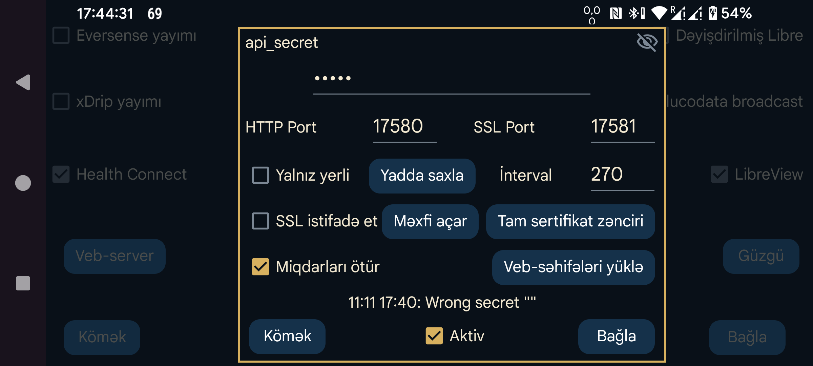

Juggluco-da başqa tətbiqlərin ondan qlükoza göstəricilərini almasına imkan verən daxili veb-server var. Bu server xDrip üçün saat tətbiqləri və bəzi Nightscout tətbiqləri ilə işləyir.
xDrip veb-serveri üçün hazırlanmış tətbiqlərdən istifadə etmək nisbətən asandır. Sadəcə Aktiv seçimini işarələyin. Bundan sonra həmin tətbiqlər qlükoza göstəricilərini 127.0.0.1 ünvanının 17580 portundan ala bilər. Nightscout serverinin URL-si: http://127.0.0.1:17580.
Bəzi Nightscout izləyici tətbiqləri də bu serverlə işləyir. Yalnız yerli seçimi söndürülübsə, xDrip, Diabox, Windows üçün Floating Glucose və Windows, Linux və macOS üçün Owlet vidceti HTTP ilə qoşula bilər. macOS-da App Store-da olan Nightscout Menu Bar, Gluco Status və Gluco Tracker də belə işləyir. iOS üçün Nightscouter, LoopFollow və iOS/watchOS üçün Nightguard da yalnız HTTP tələb edir.
Juggluco-ya internet üzərindən qoşulmaq istəyirsinizsə, modeminizdə port yönləndirməsini tənzimləməlisiniz. Daha ətraflı:
Bəzi digər Nightscout izləyici tətbiqləri yalnız HTTPS ilə işləyir. Bunun üçün Juggluco-ya qoşulmaq üçün istifadə edilən domen adına uyğun, təsdiqlənmiş SSL sertifikatı və şəxsi açar lazımdır. Xarici IP ünvanınıza domen adı bağlıdırsa, Certbot vasitəsilə pulsuz sertifikat ala bilərsiniz. Domen adı yoxdursa, bunu edə bilməzsiniz. Freenom pulsuz domen təklif edir, lakin müəllifin təcrübəsində domen bir neçə həftə sonra xəbərdarlıq edilmədən geri alınmış, yenidən qeydiyyat üçün isə ödəniş tələb olunmuşdur. Domen adını ildə bir neçə avroya da almaq mümkündür (məsələn, Strato-dan).
Certbot-u quraşdırdıqdan və modeminizin HTTP üçün 80-ci portunu kompüterinizə yönləndirdikdən sonra bu əmri icra edə bilərsiniz:
certbot certonly --standalone --preferred-challenges http -d myhostname
Baxın: Certbot haqqında təlimat.
Certbot istifadə etdikdən sonra şəxsi açar /etc/letsencrypt/live/myhostname/privkey.pem, tam sertifikat zənciri isə /etc/letsencrypt/live/myhostname/fullchain.pem ünvanında olur. Buradakı myhostname öz domen adınızla əvəz edilməlidir.
SSL sertifikatını verən qurumdan açar faylları almışsınızsa, onları Juggluco-ya göstərməlisiniz. Şəxsi açarı Məxfi açar, tam sertifikat zəncirini isə Tam sertifikat zənciri düyməsi ilə seçin.
Sadəcə qlükoza göstəricilərini bir Android cihazından digərinə göndərmək istəyirsinizsə, Juggluco-nun Güzgü funksiyasından istifadə etmək daha münasibdir (sol orta menyu → Güzgü).
AAPS, Diabetes:M, Nightwatch, Checkmate, Sugarmate (macOS və iOS), Xdrip4ios, Shuggah və Cockpit (iOS) tətbiqlərinə SSL lazımdır. Nightscout serverinin URL-si kimi bunu daxil edin:
https://hostname:port
Burada hostname Juggluco-ya təqdim etdiyiniz təsdiqlənmiş açara uyğun domen adı, port isə modeminizdə bu ekranda göstərilmiş porta (standart: 17581) yönləndirdiyiniz xarici portdur.
AAPS də Juggluco veb-serverindən Nightscout serveri kimi istifadə edə bilər. Bunun üçün AAPS-də NSClientV3 seçin və aşağıdakı parametrləri təyin edin:
api_secret dəyərindən istifadə edin;Əvvəllər daxil edilmiş Miqdarlardan daha köhnə vaxta aid Miqdar əlavə olunarsa, AAPS-də təkrarlanan müalicə qeydləri yarana bilər. Juggluco-dan V3 ilə məlumat qəbul edən Nightscout serverinə V3 interfeysi vasitəsilə qoşulduqda da belə olur.
Bəzən AAPS müalicə qeydlərini yalnız proqram məcburi dayandırılıb yenidən başladıldıqdan sonra serverdən istəməyə başlayır.
Veb-serveri Linux kompüterində də işlətmək mümkündür. O, məlumatları sensora qoşulmuş Juggluco-dan Güzgü bağlantısı ilə alır. Baxın: juggluco-server.
Başqa telefon bu serverə Güzgü bağlantısı ilə və ya Nightscout izləyicisi kimi (məsələn, iPhone-da) qoşula bilər. Hansısa Nightscout tətbiqi bu veb-serverlə işləmirsə, bu barədə müəllifə bildirin: bəlkə də kiçik dəyişikliklərlə uyğunlaşdırmaq mümkündür. iOS üçün Nightscout və Nightscout X tətbiqləri müəyyən bir Nightscout server proqramına uyğun hazırlandığından Juggluco ilə işləməyəcək.
api_secret: izləyici tətbiqlərin HTTP sorğusunun api_secret başlıq sahəsinə hansı dəyəri yazmalı olduğunu təyin edir. Bu sirr Nightscout tokeni kimi və ya SHA1 ilə kodlaşdırılmış api-secret başlığı ilə göndərildikdə də işləyir. Juggluco 7.1.15-dən etibarən api_secret Nightscout serveri URL-sinin yolunun ilk hissəsi kimi də göstərilə bilər. Məsələn, api_secret xyz, server URL-si isə http://hostname:port olduqda, URL kimi http://hostname:port/xzy yazmaq mümkündür.
Görünən: gizli açarı görünən edir.
Port: HTTPS serverinə qoşulmaq üçün portu təyin edir. Standart dəyər 17581-dir.
Yadda saxla: gizli açara və ya porta edilən dəyişiklikləri saxlayır.
SSL istifadə et: SSL (HTTPS) bağlantısını aktivləşdirir. Bunun üçün bu xidmətə qoşularkən istifadə olunan domen adına uyğun şəxsi açar və tam sertifikat zənciri təqdim edilməlidir.
Məxfi açar: şəxsi açarın olduğu faylı seçir.
Tam sertifikat zənciri: tam sertifikat zəncirinin olduğu faylı seçir.
İnterval: qlükoza göstəriciləri arasında standart minimum intervalı saniyə ilə təyin edir. Adətən 270 saniyədir. Sorğu göndərən tətbiq interval= parametri ilə bu dəyəri dəyişə bilər. Baxın: Juggluco veb-serverinin interfeysi.
Yalnız yerli: HTTP serverinə yalnız localhost (127.0.0.1) üzərindən qoşulmağa icazə verir. HTTPS-ə aid deyil.
Miqdarları ötür: daxil edilmiş Miqdarları http://127.0.0.1:17580/api/v1/treatments?count=3 ünvanından almağa imkan verir. Bunun üçün hər Miqdar etiketi üzrə uyğun davranış təyin edilməlidir. Əvvəllər bu parametrlər LibreView ilə eyni idi; 4.18.0 versiyasından etibarən LibreView və bu veb-server üçün Miqdar etiketlərinə ayrı kateqoriyalar seçmək mümkündür. xDrip bu interfeys vasitəsilə Juggluco-dan Miqdarları iki üsulla ala bilər:
http://somekey@127.0.0.1:17580/api/v1/ yazın və Download treatments seçimini aktiv edin. Juggluco-ya bu yolla məlumat yükləmək mümkün deyil; yalnız müalicə qeydləri alınır və bəzi xəta bildirişləri yarana bilər.Yalnız yerli söndürülübsə, Juggluco işləyən telefonun yerli şəbəkə IP ünvanından istifadə edə bilərsiniz. Modemi həmin telefonun 17580 portuna yönləndirsəniz, xarici IP-dən də qoşulmaq olar. Telefonun domen adına uyğun Private Key və Full Chain fayllarını təqdim edib SSL istifadə et seçimini aktivləşdirmisinizsə, http əvəzinə https ilə həmin domen adından və göstərdiyiniz portdan istifadə edə bilərsiniz.
Müalicə qeydlərini Diabetes:M-ə ötürmək üçün Juggluco məlumatlarını LibreView-a göndərib oradan Download Glucose data funksiyası ilə LibreView formatında saxlayın; sonra Diabetes:M-də Data → Import from other sources → Freestyle ilə idxal edin. Alternativ olaraq, telefonun xarici domen adına uyğun təsdiqlənmiş açar alıb Diabetes:M-də Link external source → Nightscout seçin və URL kimi https://yourhostname:Port daxil edin. Burada yourhostname Juggluco işləyən telefonun təsdiqlənmiş domen adı, Port isə burada göstərilən portdur. Diabetes:M avtomatik sinxronlaşmaya bilər; Sync düyməsini özünüz basmalı ola bilərsiniz.
Aktiv: veb-server işləyir.
Juggluco-da dəstəklənən Nightscout/xDrip veb-server sorğuları haqqında ətraflı məlumat üçün baxın: https://www.juggluco.nl/Juggluco/webserver.html.